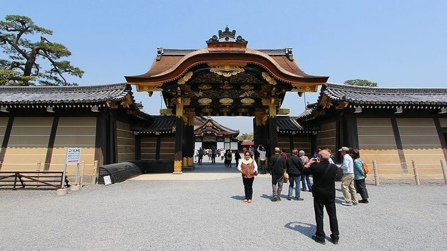
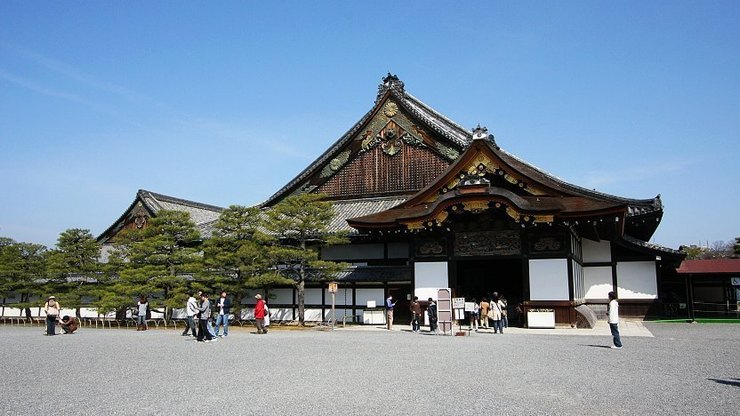
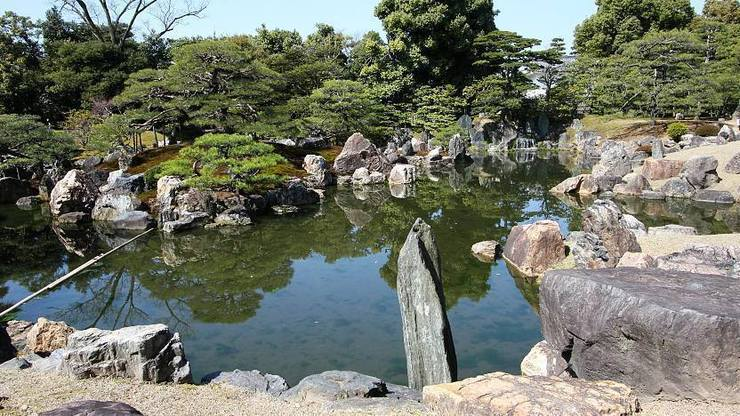
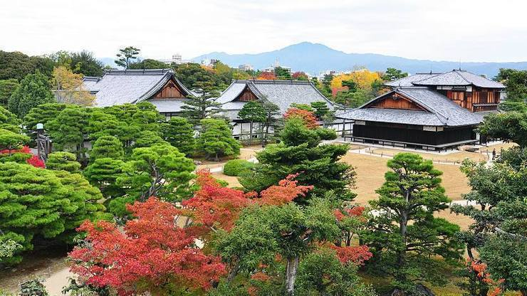
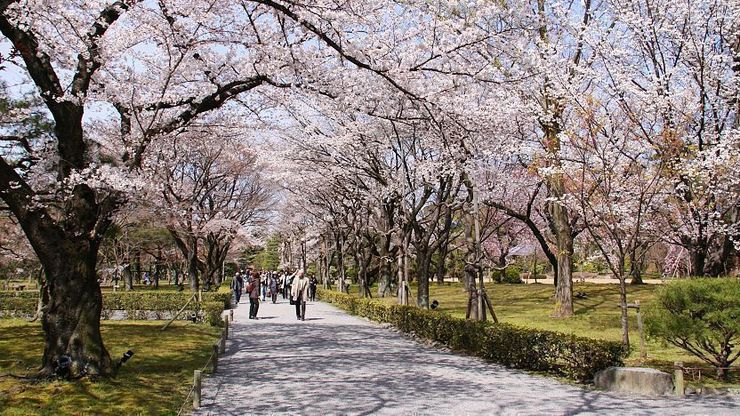

Nijo Castle(Nijojo)
二条城
Nijo Castle (二条城, Nijōjō) was built in 1603 as the Kyoto residence of Tokugawa Ieyasu, the first shogun of the Edo Period (1603-1867). His grandson Iemitsu completed the castle's palace buildings 23 years later and further expanded the castle by adding a five story castle keep.
After the Tokugawa Shogunate fell in 1867, Nijo Castle was used as an imperial palace for a while before being donated to the city and opened up to the public as a historic site. Its palace buildings are arguably the best surviving examples of castle palace architecture of Japan's feudal era, and the castle was designated a UNESCO world heritage site in 1994.
Nijo Castle can be divided into three areas: the Honmaru (main circle of defense), the Ninomaru (secondary circle of defense) and some gardens around them. The entire castle grounds and the Honmaru are surrounded by stone walls and moats.
Visitors to Nijo Castle enter the castle grounds through a large gate in the east. English audio guides are available for rent at a kiosk just inside the gate. Venturing further into the castle will bring you to the Chinese-style Karamon Gate, the entrance to the Ninomaru (secondary circle of defense), where the castle's main attraction, the Ninomaru Palace is located.
The Ninomaru Palace served as the residence and office of the shogun during his visits to Kyoto. Surviving in its original form, the palace consists of multiple separate buildings that are connected with each other by corridors with so called nightingale floors, as they squeak when stepped upon as a security measure against intruders. The palace rooms are tatami mat covered and feature decorated ceilings and beautifully painted sliding doors (fusuma).
The tour route passes by multiple waiting and audience rooms. Only the highest ranked visitors were allowed all the way into the main audience room where the shogun would sit on an elevated floor, flanked by bodyguards hidden behind doors. Lower ranked visitors would be allowed only as far as the adjoining rooms without direct view of the shogun. The innermost rooms consisted of offices and living chambers, the latter of which were only accessible to the shogun and his female attendants.
Note that to view the interior of the Ninomaru Palace, visitors need to pay an additional fee. Outside of the Ninomaru Palace extends the Ninomaru Garden, a traditional Japanese landscape garden with a large pond, ornamental stones and manicured pine trees.
The Honmaru (main circle of defense) was the site of a second palace complex and a five story castle keep. However, both structures were destroyed by fires in the 18th century and were never rebuilt. After the fall of the shogunate, an imperial residence was moved here from the Katsura Imperial Palace where it remains today as the Honmaru Palace.
Unlike the Ninomaru Palace, the Honmaru Palace is not regularly open to the public, although there are occasional special openings. Visitors may, however, walk around the Honmaru gardens and climb up the stone foundation of the former castle keep, which offers views over the castle grounds.
The Honmaru and Ninomaru are surrounded by green space and tree-lined walking paths. Cherry trees of numerous varieties are planted throughout the castle grounds, including nearly 400 cherry trees of late blooming varieties in a cherry orchard. Because of the many cherry tree varieties present, the blooming season at Nijo Castle usually lasts from late March through the entire month of April.
The castle also features a plum orchard, which is typically in bloom from late February to early March, and Seiryuen, a half Japanese, half Western style garden built in 1965 for cultural events such as tea ceremonies. Many areas of the castle grounds are also populated by maple, ginkgo and other trees that offer brilliant autumn colors usually during the second half of November.
